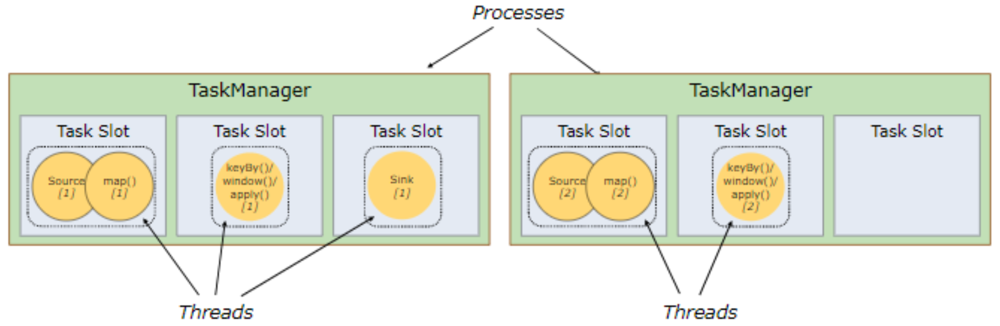

Flink
Flink 运行架构
Flink 运行时组件
- 作业管理器（JobManager）
控制一个应用程序执行的主进程，也就是说，每个应用程序都会被一个不同的 JobManager 所控制执行。
JobManager 会先接收到要执行的应用程序，这个应用程序会包括：作业图（JobGraph）、逻辑数据流图（logical dataflow graph）和打包了所有的类、库和其它资源的 JAR 包。
JobManager 会把 JobGraph 转换成一个物理层面的数据流图，这个图被叫做“执行图”（ExecutionGraph），包含了所有可以并发执行的任务。
JobManager 会向资源管理器（ResourceManager）请求执行任务必要的资源也就是任务管理器（TaskManager）上的插槽 slot。一旦它获取到了足够的资源，就会将执行图分发到真正运行它们的 TaskManager 上。而在运行过程中，JobManager 会负责所有需要中央协调的操作，比如说检查点（checkpoints）的协调。
- 任务管理器（TaskManager）
Flink 中的工作进程。通常在 Flink 中会有多个 TaskManager 运行，每一个 TaskManager 都包含了一定数量的插槽(slots)。插槽的数量限制了 TaskManager 能够执行的任务数量。
启动之后，TaskManager 会向资源管理器注册它的插槽;收到资源管理 器的指令后，TaskManager 就会将一个或者多个插槽提供给 JobManager 调用。JobManager 就可以向插槽分配任务(tasks)来 执行了。
在执行过程中，一个 TaskManager 可以跟其它运行同一应用程序的 TaskManager 交换数据。
- 资源管理器(ResourceManager)
主要负责管理任务管理器(TaskManager)的插槽(slot)，TaskManger 插槽是 Flink 中定义的处理资源单元。
Flink 为不同的环境和资源管理工具提供了不同资源管理器，比如 YARN、Mesos、K8s，以及 standalone 部署。
当 JobManager 申请插槽资源时，ResourceManager 会将有空闲插槽的 TaskManager 分配给 JobManager。如果 ResourceManager 没有足够的插槽来满足 JobManager 的请求，它还可以向资源提供平台发起会话，以提供启动 TaskManager 进程的容器。
- 分发器(Dispatcher)
可以跨作业运行，它为应用提交提供了 REST 接口。
当一个应用被提交执行时，分发器就会启动并将应用移交给一个 JobManager。
Dispatcher 也会启动一个 Web UI，用来方便地展示和监控作业执行的信息。
Dispatcher 在架构中可能并不是必需的，这取决于应用提交运行的方式。
任务提交流程
任务调度原理
注：其中的 ResourceManager 是 Yarn 的资源管理器，Flink 的资源管理器在 ApplicationMaster 中。另外在 4 中是 JobManager 先向自身的 RM 请求资源，然后自身的 RM 再去请求 Yarn 的 RM，后面步骤就跟 Flink 任务调度一样了。这是一个 job 模式（Per-Job-Cluster 模式）
任务调度原理
个人解析：
- 过程
一个作业有一个 JobManager，一个 JobManager 有多个 TaskManager，一个 TaskManager 有多个 TaskSlot。
编写一段程序代码(Flink Program)，基于代码课直接生成一个数据流图(Dataflow graph)，然后通过客户端(Client)将作业提交到集群（通过分发器发给 JobManager），然后 JobManager 将任务分发给各个 TaskSlot 上，这就相当于多线程执行，都并行执行。整个运行过程中，JobManager 并不参与具体工作过程。
- 数据交互
客户端——>JobManager：提交作业、取消作业
JobManager——>客户端：作业状态、静态结果
JobManager——>TaskManager：控制指令（分发任务、撤销任务、触发检查点）
TaskManager——>JobManager：任务状态、心跳等等
并行度
一个特定算子的子任务(subtask)的个数被称之为其并行度(parallelism)。一般情况下，一个 stream 的并行度，可以认为就是其所有算子中最大的并行度
TaskManager 和 Slots
在 Flink 中 Slots 就是执行一个独立任务或者一个独立线程的所需要的计算资源的最小单元，每个 slots 都有自己独立的内存，相互之间互不干扰。
注：建议 slots 数量：TaskManager 上的 CPU 核心数量（一个 slots 占用一个核，不用相互等待，默认就是整个规则）
Flink 中每一个 TaskManager 都是一个 JVM 进程，它可能会在独立的线程上执行一个或多个子任务
为了控制一个 TaskManager 能接收多少个 task，TaskManager 通过 task slot 来进行控制(一个 TaskManager 至少有一个 slot)

默认情况下，Flink 允许子任务 slot 共享（不同任务共享一个 slot，如下图，第一个 slot 运行三个线程。其可以共享的前提是前后发生的不同的任务的子任务才可以共享）。这样的结果是一个 slot 可以保存作业的整个管道（PipeLine）。
Task Slot 是静态的概念，是指 TaskManager 具有的并发执行能力
注：若是 2-5 图中那样，则会产生不同的 slots 之间，有的会非常“忙碌”，有的会非常“清闲”。比如，2-5 中在第一个 slot 中，只有读取和 map 操作，当数据量很大时，它也能很快做完，但是第二个 slot 就不一样了，当数据量很大时，他会运行非常慢；但是在 2-6 中，在同一个 slot 中有多个任务时，在读取数据和 map 很快操作完之后，其可以继续执行下面的 keyBy、window 等一系列操作，这就使得每个 slot 都能充分利用。
补充：配置 slot 共享组
// 当没有配置共享组时，其默认是跟上一个配置的共享组是一组，若上面也没有，则会创建一个默认的
DataStream<String> stringDataStream = streamEnv.socketTextStream(host, port);
// slotSharingGroup("green")进行共享组配置，其中的green为共享组名称
DataStream<Tuple2<String, Integer>> resultStream =
stringDataStream.flatMap(new WordCount.MyFlatMapper()).slotSharingGroup("green")
.keyBy(0)
.sum(1).setParallelism(2).slotSharingGroup("red");
// 其共享组是上面的red
resultStream.print();通过上面的代码可以看出，其一共有三个共享组（默认的第一个、green、red）
并行子任务的分配
其中一共 16 个自任务，只需要 4 个 slot 就能解决。一般整个流处理过程的并行度就是其中所有算子最大的子任务数，其决定了 slots 数量。
第一部分图：其中有 3 个 TaskManager 每个 TaskManager 有 3 个 TaskSlots（其推荐数量为 CPU 核数——逻辑核数）
第二部分图：提交任务时，未做并行度设置，因此默认是 1
第三部分图：设置并行度有三种方式——配置文件修改，这种方式需要重启集群；提交 flink-job 的时候，给一个 -p 参数；直接在嗲吗中写死。优先级是从后往前逐渐降低。因为其中三个任务可以共享 slots，因此只需要两个 slots 就可以完成。
第一部分图：最大限度使用 slots
第二部分图：其中的 sink 可能需要写到一个文件中，所以在多线程写入的时候，可能会出现问题。所以在某些场景下为了避免出现问题，将 sink 的并行度设为 1
程序与数据流(DataFlow)
所有的 Flink 程序都是由三部分组成的: Source 、Transformation 和 Sink。
Source 负责读取数据源，Transformation 利用各种算子进行处理加工，Sink 负责输出
在运行时，Flink 上运行的程序会被映射成“逻辑数据流”(dataflows)，它包含了以上三部分
每一个 dataflow 以一个或多个 sources 开始以一个或多个 sinks 结束。dataflow 类似于任意的有向无环图(DAG)
在大部分情况下，程序中的转换运算(transformations)跟 dataflow 中的算子 (operator)是一一对应的关系
执行图
Flink 中的执行图可以分成四层:StreamGraph -> JobGraph -> ExecutionGraph -> 物理执行图
StreamGraph:是根据用户通过 Stream API 编写的代码生成的最初的图，用来表示程序的拓扑结构。相当于一个操作一个任务。
JobGraph:StreamGraph 经过优化后生成了 JobGraph，提交给 JobManager 的数据结构。主要的优化为，将多个符合条件的节点串在一起作为一个任务节点
ExecutionGraph:JobManager 根据 JobGraph 生成 ExecutionGraph（执行图）。 ExecutionGraph 是 JobGraph 的并行化版本，是调度层最核心的数据结构。
物理执行图:JobManager 根据 ExecutionGraph 对 Job 进行调度后，在各个 TaskManager 上部署 Task 后形成的“图”，并不是一个具体的数据结构。

数据传输形式
一个程序中，不同的算子可能具有不同的并行度
算子之间传输数据的形式可以是 one-to-one (forwarding) 的模式也可以是 redistributing 的模式，具体是哪一种形式，取决于算子的种类
One-to-one:stream 维护着分区以及元素的顺序(比如 source 和 map 之间)。 这意味着 map 算子的子任务看到的元素的个数以及顺序跟 source 算子的子任务生产的元素的个数、顺序相同。map、fliter、flatMap 等算子都是 one-to-one 的对应关系。相当于 spark 的窄依赖。
Redistributing:stream 的分区会发生改变。每一个算子的子任务依据所选择的 transformation 发送数据到不同的目标任务。例如，keyBy 基于 hashCode 重分区、而 broadcast 和 rebalance（轮询：若上游有四个任务，下游有三个任务，那么上游的 1 2 3 分别分发给了 1 2 3，上游的 4 就会重新发给下游的 1）会随机重新分区，这些算子都会引起 redistribute 过程，而 redistribute 过程就类似于 Spark 中的 shuffle 过程。相当于 spark 的窄依赖。
任务链(Operator Chains)
Flink 采用了一种称为任务链的优化技术，可以在特定条件下减少本地通信的开销。为了满足任务链的要求，必须将两个或多个算子设为相同的并行度，并通过本地转发(local forward)的方式进行连接
相同并行度的 one-to-one 操作，Flink 这样相连的算子链接在一起形成一个 task，原来的算子成为里面的 subtask
注：并行度相同、并且是 one-to-one 操作，而且是同一 slot 共享组，三个条件缺一不可
注：若不想任务合并，除了破坏上面条件之外，还可以直接在不想合并操作后面使用.disableChaining()；或者在生成的环境后面使用.disableOperatorChaining()——这样就会使所有的操作都不合并